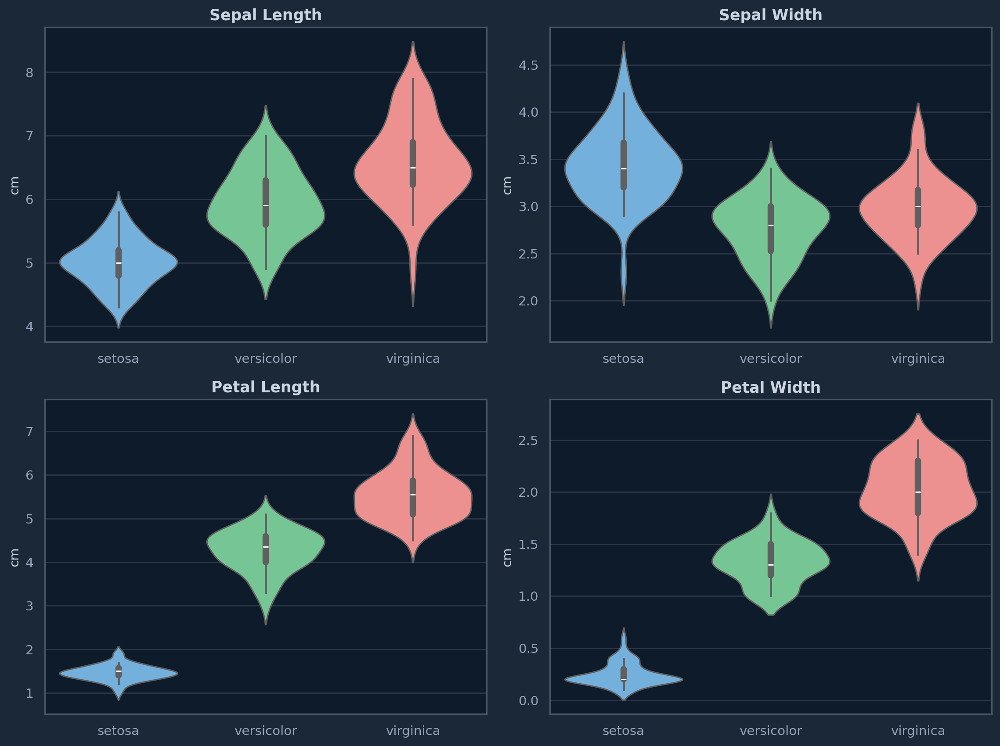
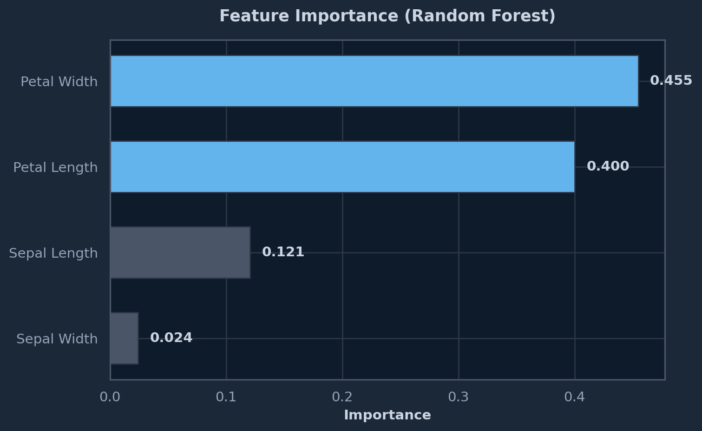

A visual exploration of the classic Iris dataset using matplotlib, seaborn, and scikit-learn. Includes distribution analysis, correlation heatmaps, and a classification model.
Author
Daniel Huencho
Published
January 26, 2026
Introduction
The Iris dataset is one of the most well-known datasets in machine learning. It contains 150 samples from three species of Iris flowers (Iris setosa, Iris versicolor, and Iris virginica), with four features measured for each sample: sepal length, sepal width, petal length, and petal width.
In this project, we perform an exploratory data analysis (EDA) to understand the distribution of features, relationships between variables, and build a simple classification model.
Dataset Overview
Code
df.head(10)
Table 1: First 10 rows of the Iris dataset
sepal length (cm)
sepal width (cm)
petal length (cm)
petal width (cm)
species
0
5.1
3.5
1.4
0.2
setosa
1
4.9
3.0
1.4
0.2
setosa
2
4.7
3.2
1.3
0.2
setosa
3
4.6
3.1
1.5
0.2
setosa
4
5.0
3.6
1.4
0.2
setosa
5
5.4
3.9
1.7
0.4
setosa
6
4.6
3.4
1.4
0.3
setosa
7
5.0
3.4
1.5
0.2
setosa
8
4.4
2.9
1.4
0.2
setosa
9
4.9
3.1
1.5
0.1
setosa
The dataset has 150 samples across 3 species, each with 4 numerical features.
Code
df.groupby('species').describe().T.round(2)
/tmp/ipykernel_205478/2432499185.py:1: FutureWarning:
The default of observed=False is deprecated and will be changed to True in a future version of pandas. Pass observed=False to retain current behavior or observed=True to adopt the future default and silence this warning.
Table 2: Summary statistics by species
species
setosa
versicolor
virginica
sepal length (cm)
count
50.00
50.00
50.00
mean
5.01
5.94
6.59
std
0.35
0.52
0.64
min
4.30
4.90
4.90
25%
4.80
5.60
6.22
50%
5.00
5.90
6.50
75%
5.20
6.30
6.90
max
5.80
7.00
7.90
sepal width (cm)
count
50.00
50.00
50.00
mean
3.43
2.77
2.97
std
0.38
0.31
0.32
min
2.30
2.00
2.20
25%
3.20
2.52
2.80
50%
3.40
2.80
3.00
75%
3.68
3.00
3.18
max
4.40
3.40
3.80
petal length (cm)
count
50.00
50.00
50.00
mean
1.46
4.26
5.55
std
0.17
0.47
0.55
min
1.00
3.00
4.50
25%
1.40
4.00
5.10
50%
1.50
4.35
5.55
75%
1.58
4.60
5.88
max
1.90
5.10
6.90
petal width (cm)
count
50.00
50.00
50.00
mean
0.25
1.33
2.03
std
0.11
0.20
0.27
min
0.10
1.00
1.40
25%
0.20
1.20
1.80
50%
0.20
1.30
2.00
75%
0.30
1.50
2.30
max
0.60
1.80
2.50
Feature Distributions
Violin plots reveal how each feature is distributed across the three Iris species. Notice how petal measurements provide much clearer separation between species compared to sepal measurements.
/tmp/ipykernel_205478/4012254396.py:6: FutureWarning:
Passing `palette` without assigning `hue` is deprecated and will be removed in v0.14.0. Assign the `x` variable to `hue` and set `legend=False` for the same effect.
/tmp/ipykernel_205478/4012254396.py:6: FutureWarning:
Passing `palette` without assigning `hue` is deprecated and will be removed in v0.14.0. Assign the `x` variable to `hue` and set `legend=False` for the same effect.
/tmp/ipykernel_205478/4012254396.py:6: FutureWarning:
Passing `palette` without assigning `hue` is deprecated and will be removed in v0.14.0. Assign the `x` variable to `hue` and set `legend=False` for the same effect.
/tmp/ipykernel_205478/4012254396.py:6: FutureWarning:
Passing `palette` without assigning `hue` is deprecated and will be removed in v0.14.0. Assign the `x` variable to `hue` and set `legend=False` for the same effect.

Figure 1: Feature distributions by species — violin plots
Pairwise Relationships
A pairplot shows all feature combinations, revealing clusters and the separability of each species.
Figure 4: Confusion matrix — Random Forest classifier on the test set
Code
importances = clf.feature_importances_feature_labels = [name.replace(' (cm)', '').title() for name in iris.feature_names]sorted_idx = np.argsort(importances)fig, ax = plt.subplots(figsize=(8, 5))colors = ['#63b3ed'if i >=2else'#4a5568'for i in sorted_idx]ax.barh(range(len(sorted_idx)), importances[sorted_idx], color=colors, edgecolor='#2d3748', height=0.6)ax.set_yticks(range(len(sorted_idx)))ax.set_yticklabels([feature_labels[i] for i in sorted_idx])ax.set_xlabel('Importance', fontweight='bold')ax.set_title('Feature Importance (Random Forest)', fontweight='bold', pad=15)for i, v inenumerate(importances[sorted_idx]): ax.text(v +0.01, i, f'{v:.3f}', va='center', color='#cbd5e1', fontweight='bold')plt.tight_layout()plt.savefig('iris-importance.png', dpi=150, bbox_inches='tight', facecolor='#1b2838')

Figure 5: Feature importance — which features matter most for classification
Summary
Aspect
Finding
Best separators
Petal length and petal width
Easiest species
Setosa — linearly separable
Hardest pair
Versicolor vs Virginica
Model accuracy
Random Forest achieves near-perfect accuracy on this dataset
Top features
Petal width and petal length dominate feature importance
This analysis demonstrates a standard EDA workflow: understand the data structure, visualize distributions, explore correlations, and build a baseline model.